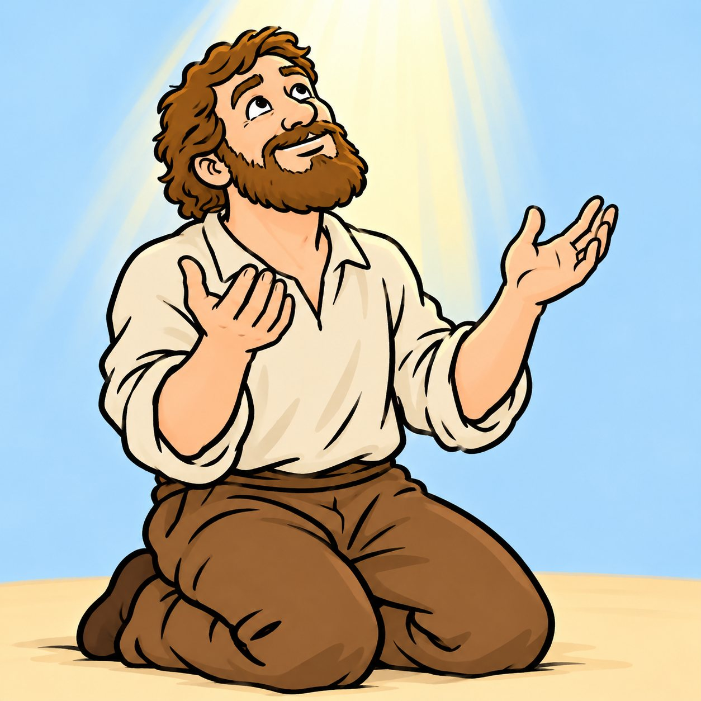
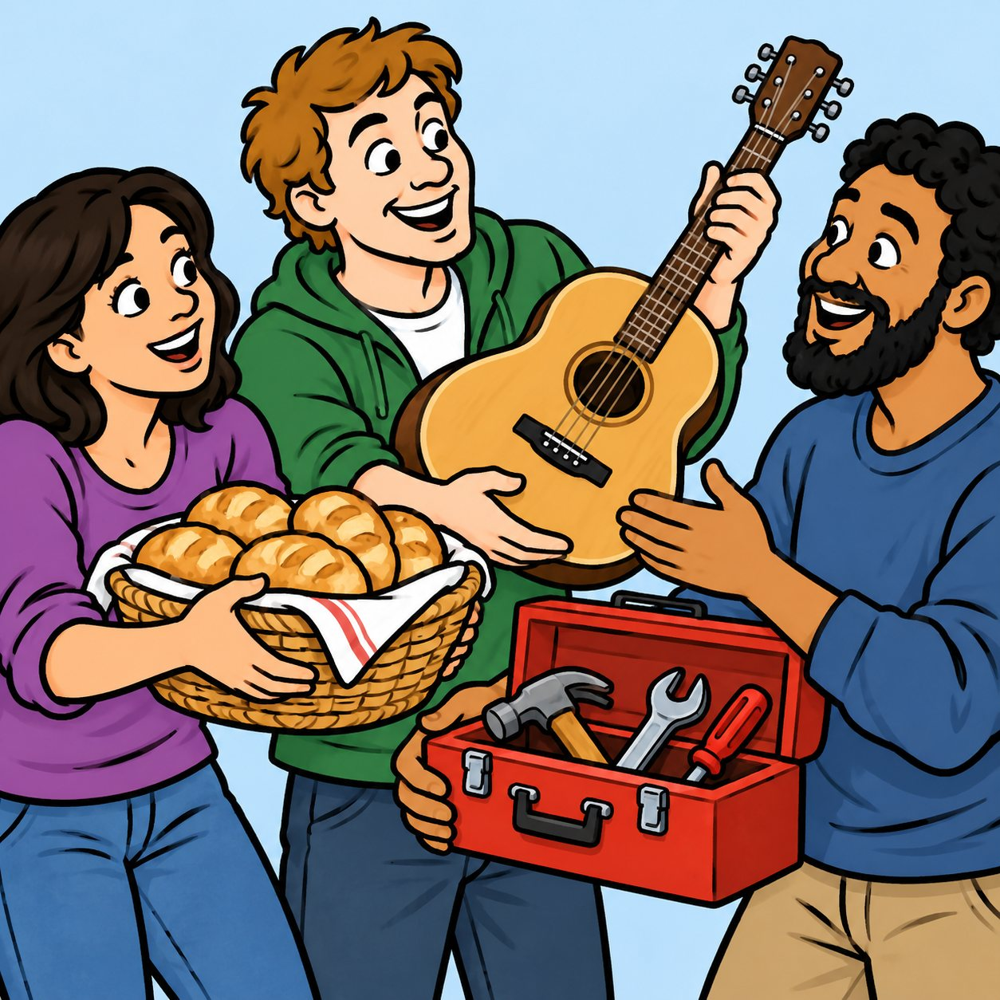
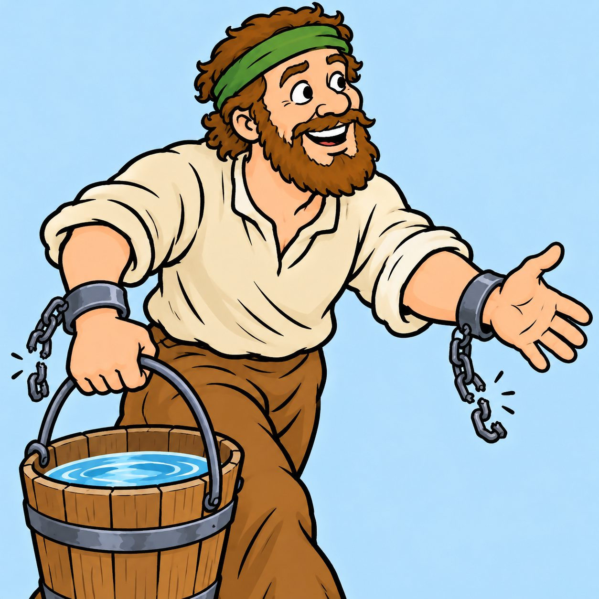
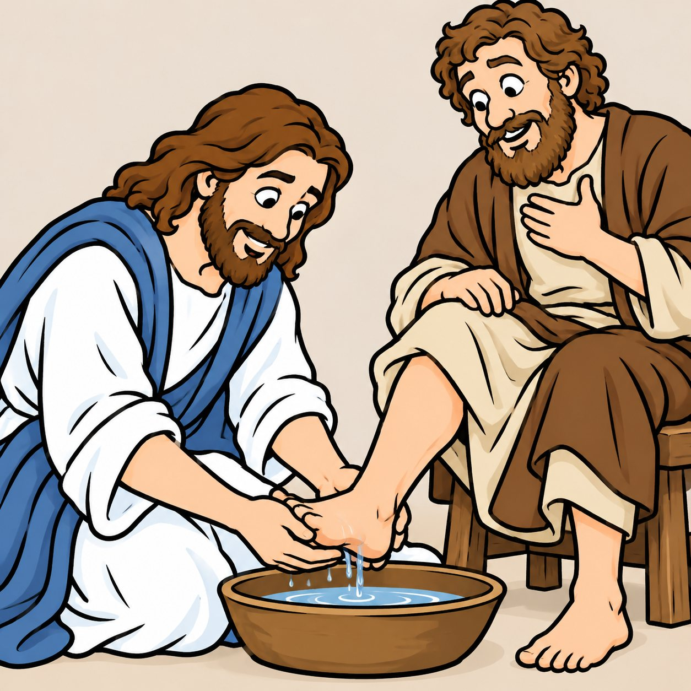
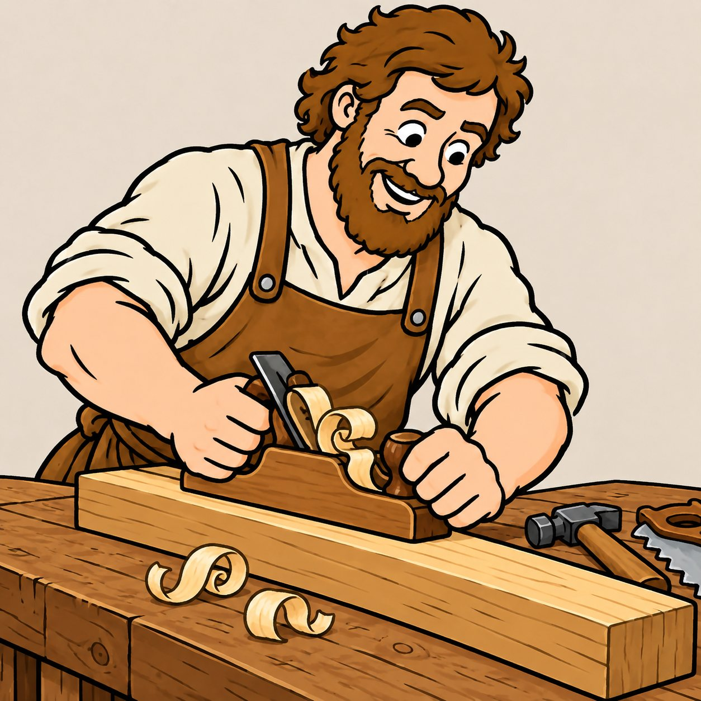
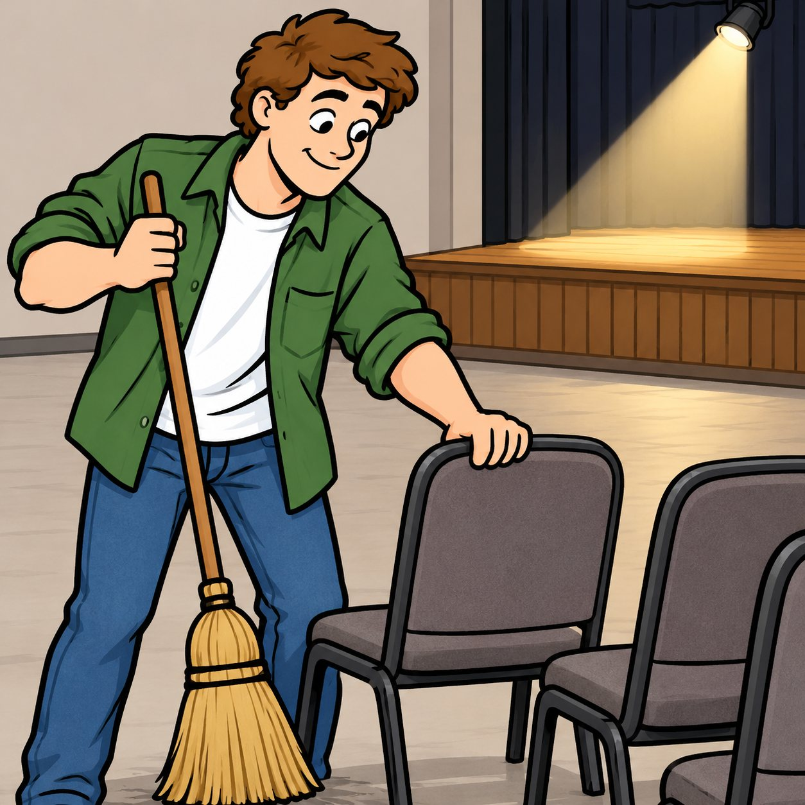

Serie de la Reforma
Reformados para
servir
Efesios 2:8-10
Antes de 1517
Servir a Dios era cosa de
algunos
.
El pueblo solo miraba.
Efesios 2:8-10
Salvos por
gracia
…
…creados para buenas obras.
1
Todos somos
sacerdotes
1520
No hay dos clases de cristianos.
1 Pedro 2:9

1a · Acceso directo
Un solo mediador:
Jesucristo
.
1 Timoteo 2:5

1b · Llamado a servir
“Cada uno según el don…
minístrelo
a los otros”
1 Pedro 4:10
ἱεράτευμα
hieráteuma
Un
pueblo entero
de sacerdotes
Para pensar
¿Sacerdotes o
espectadores
?
2
Servir por
gratitud
Antes de la Reforma
Las obras se usaban para
ganar
el favor de Dios.
2a · No para ganar
“…no por obras, para que nadie se
gloríe
.”
Efesios 2:9
2b · Ya fuimos alcanzados
“…por las
misericordias
de Dios…”
Romanos 12:1
λατρεία
latreía
Servir es
adorar
Para pensar
¿Servimos para que Dios nos acepte… o porque
ya
nos aceptó?

3
Libres para
servir
Lutero · 1520
Libre señor de todo.
Servidor
de todos.

Gálatas 5:13
“…
servíos
por amor los unos a los otros.”
δουλεύω
douleúō
Servir como esclavo…
siendo libre
Para pensar
¿La libertad es una excusa… o una
oportunidad
?
4
Todo trabajo es
servicio
Una idea de Lutero
Dios también obra en lo
cotidiano
.

Colosenses 3:23-24
“…hacedlo de corazón, como para el
Señor
…”
κλῆσις
klēsis
Llamado ·
vocación
Para pensar
¿Cómo servimos a Cristo el
lunes
?

5
Sin plataforma
propia
J. S. Bach
S.D.G.
Solo a Dios la
gloria
El contra-modelo
“…le gusta tener el
primer lugar
…”
3 Juan 9
El modelo
“Es necesario que él crezca, pero que yo
mengüe
.”
Juan 3:30
φιλοπρωτεύω
philoprōteúō
Amar ser el
primero
Para pensar
Si nadie nos agradeciera… ¿seguiríamos
sirviendo
?
Efesios 2:10
No nos liberó de servir.
Nos liberó
para
servir.
S.D.G.
Firmamos nuestro servicio:
solo a Dios la gloria
.